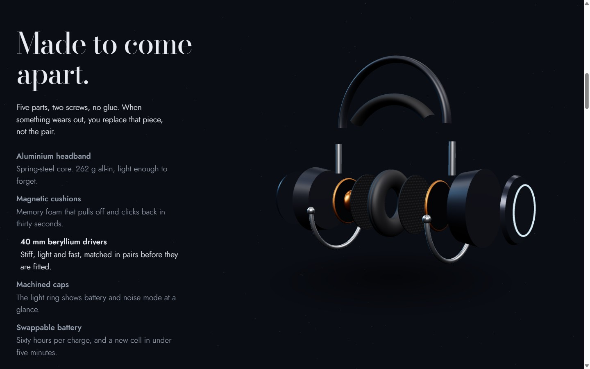
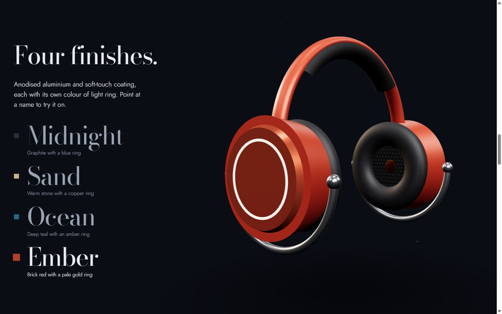

Overview
No model files. The whole headphone is code.
Every part of the headphone, from the headband to the drivers and light ring, is built from three.js primitives in one module. After the 3D story the page continues with a studio photo band, a priced list of replacement parts, and a photo footer.
Scroll story
Four pinned sections, one camera.
- Each section holds the camera on a keyframe while the text is read, then hands over smoothly to the next.
- "Made to come apart" separates the headband, cushions, drivers, caps, and battery, highlighting each part in the list as you scroll.
- The finish picker previews Midnight, Sand, Ocean, or Ember on hover and keeps it on click. Without a choice, scrolling sweeps through all four.
- The last keyframe closes in on the ear cup before the page hands over to normal content.
Performance
Light on the GPU.
Adaptive pixel ratio
Capped at 2 and lowered automatically if frames drop.
No real-time shadows
Lighting carries the form without shadow maps.
Stops when hidden
Rendering pauses once the 3D stage scrolls out of view.
Phone layout
The model sits on top with text beneath on small screens.
Design and access
A restrained system around a loud object.
Bodoni Moda for the wordmark, headings, and figures; Jost for body text. One blue-black ground, light ink, and a single cornflower accent reserved for the pre-order action. Square buttons, no gradients, no CSS shadows.
Real buttons and links, visible focus, alt text, prefers-reduced-motion support, and a fallback message when WebGL is unavailable.
Scope and limits
What is real here.
- AURA One is a fictional product. The brand, specifications, prices, and copy are placeholders for a design demo.
- The studio photographs are openly licensed images of real studios, credited in the page footer. They are not AURA's studios.
Screenshots
Captured from a local run.

The parts list highlights as each piece separates.

Ember applied to the model from the picker.

The model floats above the wordmark.